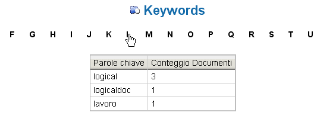

Visualizzazione Parole Chiave |
In LogicalDOC sotto la voce di menù Ricerche è possibile visualizzare la pagina di ricerca per tag. Questa funzionalità consente all'utente di poter ricercare i documenti che contengono una parola chiave che inizia con la lettera selezionata. Infatti, selezionando una lettera, LogicalDOC visualizza una tabella con l'elenco di tutti i tag che iniziano con quella stessa lettera e il numero di documenti associati al singolo tag.

Cliccando sul tag, verrà visualizzato l'elenco di tutti i documenti che sono associati a quella specifica parola chiave. Infine, cliccando sull'icona 3.23, sarà possibile visualizzare il documento selezionato all'interno della relativa cartella.